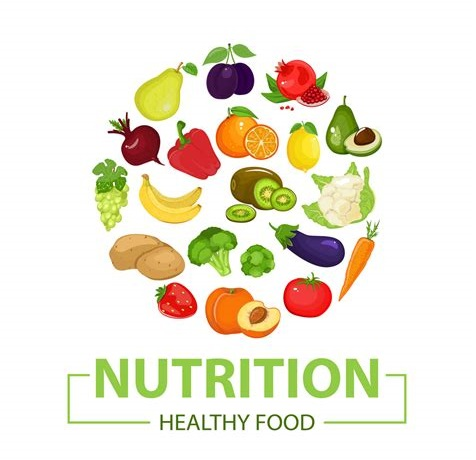

Welcome to Nutrition Tuesday! Today we’ll discuss the importance of proper nutrition and some tips for a healthy, balanced diet.
Proper nutrition is essential for maintaining overall health and well-being. A healthy, balanced diet provides the necessary nutrients, vitamins, and minerals that our bodies need to function properly, fight off disease, and maintain a healthy weight.

Here are some tips for a healthy, balanced diet:
Remember, a healthy, balanced diet is just one part of overall health and well-being. Regular physical activity, stress management, and enough sleep are important components of a healthy lifestyle.
Incorporating these tips into your daily routine can help improve your nutrition and overall health. Eat various foods, choose whole foods, limit processed and sugary foods, stay hydrated, and practice portion control. You can develop healthy habits that will benefit you for years by making small changes over time.